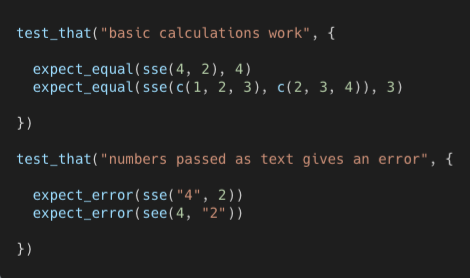
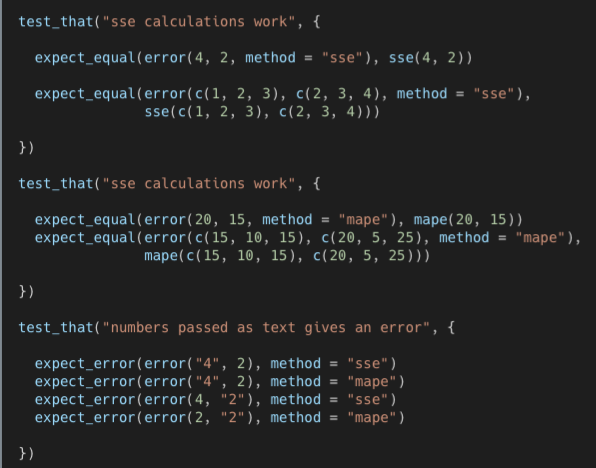
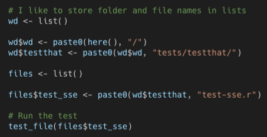

Package Development
Misc
- Packages
- {pkgdocs} (Video) - Modular approach to package documentation
- Not focused on generating a static website directly, but rather (markdown) pages that can be included in a larger documentation site.
- Built for multi-package projects (e.g. one w/shiny app, one that connects to db)
- Modular pages are embedded into a large website where the pages use the styling of the website
- Global search (cross-referencing between packages)
- Optimized to use with Hugo websites (Themes, Deploy, Components)
- Recommended to use docsy them (used by ShinyProxy, RDepot). For additional filing see Look and Feel section of the docs.
- Example of multi-package project, craneserver (See R Client and Python Client pages)
- {altdoc} - Alternative to pkgdown
- Supports multiple documentation frameworks: quarto, Docsify, mkdocs, docute
- {goodpractices} - Give advice about good practices when building R packages. Advice includes functions and syntax to avoid, package structure, code complexity, code formatting, etc
- cobertura-action (Thread) - Github Action that provides private code coverage
- {usethis::use_coverage} uses codecov.io which evidently collects your code
- {autoimport} - A toolbox to automatically generate
@importFromroxygen tags from R files. - {roxygen2} - Describe your functions in comments next to their definitions and roxygen2 will process your source code and comments to automatically generate
.Rdfiles inman/,NAMESPACE, and, if needed, theCollatefield inDESCRIPTION. - {pedant} - Reformats function code to
package::functionformat. Looks at the DESCRIPTION and NAMESPACE files to work out which packages to use when making functions explicit. Otherwise it will use the currently attached packages. - {rocleteer} - roxygen2 extension package
- Tag for examples that require a temporary directory
- Tag for interactive examples using webr
- {pkgdocs} (Video) - Modular approach to package documentation
- Resources
- Version Number Syntax
- 0.0.0.9000 = the “.9000” means intital experimental or in development version (.9001 would be the second experimental version)
- 0.1.0 = the “1” means this is your first “minor” version
- 1.0.0 = the “1” means this is your first “major” version
- In function docs, always use @examples and NOT @example
- If you have internal functions (e.g. little helper functions) that you don’t want your users to have the regular access to then:
- Don’t include @export for that function’s script
- Documentation of the function isn’t required
- Add a file from another repo using
usethis::use_standalone- If another package has a set of functions that you’d like to include in your package but don’t want to import their entire package, this can be used.
- It always overwrites an existing standalone file of the same name, making it easy to update previously imported code.
- Using “Starting a Package” (below) takes some time when you want to test newly written functions.
- Alternative:
load_all()- Quickly makes function available for interactive testing, (ctrl + shift + L)
- Alternative:
- Change package name (if not on CRAN):
changer::changer("current_pkg_name", "new_pkg_name")- Shouldn’t have the package project open when running this. I set the working dir to the root of my “Projects” directory locally (e.g Projects >> current_proj_directory, then set working directory to Projects)
- This changes EVERYTHING automagically, but be sure and make a copy of the directory before running just in case.
- Need to change repo name in the github repo’s settings before pushing changes
- Create Citation file for package:
usethis::use_citation()- Only execute after you’ve gone through putting your package on zenodo and have a generated citation to populate the fields of the CITATION file.
- See indianacovid19data project for example
- If planning to release on CRAN, use
usethis::use_release_issue, which creates a checklist of things to fix/do before submitting to CRAN- CRAN requires your pkg run without issues on all platforms. {covr} tracks test coverage for your R package and view reports locally or (optionally) upload the results to codecov or coveralls
- Developing Internal Packages
Developing packages for your company’s specific use cases increases efficiency
- Examples
- Collection
- Pulling data from public sources
- Database
- Connections and Querying
- API requests
- ETL processes
- Report building
- Data manipulation
- Visualization
- Collection
- Examples
See Building a team of internal R packages | Emily Riederer and VIDEO How to make internal R packages part of your team - RStudio
- Also {RDepot} for management
Managing internal pkg updates with a team (Thread)
Roxygen options for examples
@examplesIf interactive() @examples \dontrun @examples \donttest
Starting a Package
Check package name, Create pkg, DESCRIPTION, Set-Up Git
Check if package name already taken on CRAN:
available::available("package_name", browse = FALSE) pak::pkg_name_check("pkg_name")- Asks you stuff about using “urban dictionary” to see if your package name might be offensive. Just say yes. (or it keeps asking)
- You want it to say that your package name is available on CRAN
- Shows sentiment analysis of your package name according to different dictionaries
Create directory, a project, a basic package skeleton in that directory
setwd("~/R/Projects") usethis::create_package("package_name")Open project and fill out some of DESCRIPTION
- Title, Authors, Description
Go to Build pane in RStudio \(\rightarrow\) more \(\rightarrow\) Configure Build Tools \(\rightarrow\) Make sure the “Generate documentation with Roxygen” box is ticked (tick it and click ok)
Set-Up Git:
usethis::use_git()- It will ask to commit the package skeleton to github \(\rightarrow\) Choose yes to commit locally
- It’ll ask you to restart RStudio to activate the git pane \(\rightarrow\) Choose yes
- Set-up of GH Auth token, if you don’t have one
- Then use
usethis::create_github_token()and follow steps - Refresh session once you’ve updated .Renviron
- Then use
- For private repo:
usethis::use_github(private = TRUE) - For public repo:
usethis::use_github(private = FALSE, protocol = "ssh")- Choose 1 to use ssh key
- “Are title and description okay?” \(\rightarrow\) choose 3. Yes
Basic Set-up
- Use Markdown for documentation:
usethis::use_roxygen_md() - Add license:
usethis::use_mit_license(copyright_holder = "Eric Book") - Add Readme.Rmd:
usethis::use_readme_rmd()- You’ll still need to render/knit README.Rmd regularly.
- To keep README.md up-to-date,
devtools::build_readme()is handy. - You could also use GitHub Actions to re-render README.Rmd every time you push. An example workflow can be found here: https://github.com/r-lib/actions/tree/master/examples.
- Add News/Changlog file:
usethis::use_news_md() - Add Article/Vignette:
usethis::use_vignette - Document, Install, and Check package
- Build pane \(\rightarrow\)
- more \(\rightarrow\) Run Document
- Run Install and Restart
- Run Check
- Build pane \(\rightarrow\)
- Commit files and Push
Development
Add common imported functions to DESCRIPTION
usethis::use_tidy_eval() usethis::use_tibble()Add data
# read data into environment pkg_dat <- readr::read_rds("../path/to/data.rds") usethis::use_data(pkg_dat, overwrite = TRUE)- Creates data directory and adds data as an .rda file
- Document the data:
usethis::use_r("data")- See indianacovid19data for examples
- If you want to store binary data and make it available to the user, put it in data/. This is the best place to put example datasets. If you want to store parsed data, but NOT make it available to the user, put it in R/sysdata.rda. This is the best place to put data that your functions need.
- If you want to store raw data, put it in inst/extdata.
Add Functions
- Create R file:
usethis::use_r("name-function-file") - Write function
- Use
pkg::functionformat for every external package function
- Use
- Add documentation (e.g.
@description,@params,@returns,@details,@references,@export, and@examples- When pasting code into examples, use the RStudio multiple cursors feature (ctrl + alt + up/down) to add “#>” to all the lines of code at once
- Add packages used in function to DESCRIPTION:
usethis::use_package("package_name") - Make sure hardcoded variable names are in global variables file
- Make sure any data used in
@examplesis added and documentedf - If submitting to CRAN: need examples and they should be wrapped in
\dontrun{}and\donttest{}. - Test
- Build pane \(\rightarrow\) more \(\rightarrow\) Run Document (Ctrl+Shift+D) \(\rightarrow\) Run Install and Restart (ctrl+shift+B) \(\rightarrow\) Run Check (ctrl+shift+E)
- After writing a function or two, set-up {pkgdown}, and return here.
- Add new function to _pkgdown.yml
- Add new function to any additional pages of the site (e.g. vignettes, Readme.Rmd)
- Remember to knit
- Run
pkgdown::build_site()- Knits html pages for reference function pages
- Commit and Push
- Rinse and Repeat for each function
- Create R file:
pkgdown
- Docs
- Set-Up:
usethis::use_pkgdown()- Creates yaml file: _pkgdown.yml
- Fill out yaml
- Publish website and set-up Github Actions:
usethis::use_pkgdown_github_pages() - Customize site
- Name css file, “extra.css”, and place in folder called, “pkgdown” (also extra.js, extra.scss)
- When testing out themes, css features, etc., iterating is much faster when using
build_home_index(); init_site()instead ofbuild_site(). Then, refresh html page in browser. - See docs for bslib variables that can be used in _pkgdown.yml (requires using bootsrap 5).
Dependencies
- Misc
- Imports and Depends
- Imports just loads the package
- Unless there is a good reason otherwise, you should always list packages in Imports not Depends. That’s because a good package is self-contained, and minimises changes to the global environment (including the search path)
- Depends attaches it.
- Imports just loads the package
- Loading and Attaching
- Loading
- The package is available in memory, but because it’s not in the search path (path that R searches for functions), you won’t be able to access its components without using ::.
- Attaching
- Puts the package in the search path. You can’t attach a package without first loading it
- Both
library()(throws error when pkg not installed )orrequire()(just returns false when pkg not installed) load then attach the package
- Loading
- Using a development version
Use
usethis::use_dev_package("purr", type = "Imports" )- There’s a remote that defaults to looking in github for the development version, but there are other options. See {remotes} vignette
Manually
Specify package version in Imports/Suggests of DESCRIPTION
Imports: purrr (>= 1.0.4.9000)Add a Remotes section to DESCRIPTION and add github repo or other source. See {remotes} vignette
Remotes: tidyverse/purrr
If only Suggests, notify user of the special dependency
Example: In function documentation
#' @param parallel (default: FALSE) Logical indicating whether to use parallel processing. #' Requires having purrr (>= 1.0.4.9000) installed, [mirai (>= 2.1.0.9000)](https://shikokuchuo.net/mirai/) package installed and loaded, and setting `mirai::daemons()` to the number of desired processes. (See Examples) #' @examples #' rlang::check_installed( #' "mirai", #' action = function(...) { #' remotes::install_version('mirai (>= 2.1.0.9000)', #' version = ">= 2.1.0.9000", #' repos = c('https://shikokuchuo.r-universe.dev', #' 'https://cloud.r-project.org')) #' } #' )
- Using a R-Universe Package
Steps:
Add “Additional_repositories” to DESCRIPTION file
Additional_repositories: https://shikokuchuo.r-universe.dev- For more than one, use a comma to separate them
If it’s a developement version, make sure the version is specified in Import/Suggest
Suggests: mirai (>= 2.1.0.9000)If it’s a developement and in Suggests, inform the user of the special dependency
Example: Function Documentation
#' @param parallel (default: FALSE) Logical indicating whether to use parallel processing. #' Requires having purrr (>= 1.0.4.9000) installed, [mirai (>= 2.1.0.9000)](https://shikokuchuo.net/mirai/) package installed and loaded, and setting `mirai::daemons()` to the number of desired processes. (See Examples) #' @examples #' rlang::check_installed( #' "mirai", #' action = function(...) { #' remotes::install_version('mirai (>= 2.1.0.9000)', #' version = ">= 2.1.0.9000", #' repos = c('https://shikokuchuo.r-universe.dev', #' 'https://cloud.r-project.org')) #' } #' )
Add “extra-repositories” to R CMD and pkgdown github actions
# pkgdown.yaml jobs: pkgdown: steps: - uses: r-lib/actions/setup-r@v2 with: extra-repositories: 'https://shikokuchuo.r-universe.dev' # R-CMD-check.yaml jobs: R-CMD-check: steps: - uses: r-lib/actions/setup-r@v2 with: extra-repositories: 'https://shikokuchuo.r-universe.dev'- For additional repositories, separate with a comma
Testing
- Packages
- {testthat} explicitly evaluates the outputs of your function but you can add a test that makes sure the checks on inputs within the function are working
- {doctext} - Generate tests from examples using {roxygen} and {testthat}
- {cucumber} - Acceptance Testing
- Test user workflows and real scenarios.
- Make sure your package helps users achieve their actual goals, not just pass technical checks.
- {covr} - Code Coverage
- {muttest} - Mutation Testing
- Check if your tests really catch faults.
- High coverage isn’t enough, mutation testing exposes weak spots in your suite.
- Run tests (Ctrl+Shift+T):
test()- Also ran when using,
check()
- Also ran when using,
- Set-up - Run
usethis::use_testthatwithin the project directory- Creates:
- A tests folder in your working directory
- A testthat folder in the tests folder where your tests will live
- A testthat.R file in the tests folder which organizes things for running. Don’t modify this manually.
- Creates:
- Names of your testing files must begin with ‘test’
- e.g. testing file, ‘test-my-function.R’, which lives in testthat folder
- Writing Tests
Write tests using the
test_thatfunction, and with each test, there’s an “expectation.”You can have one or more tests in each file and one or more expectations within each test.
Example
test_that("description of the test", { test_output1 <- dat %>% your_package_function() expect_equal(nrow(test_output1), 6) # etc... })Example
- Where sse is the function you’re testing
Example
expect_error(compute_corr(data = faithful, var1 = erruptions, var2 = waiting)- erruptions isn’t a column in the dataset and should throw an error because of a check inside the function
- Also
expect_warning()available
Example: Compare optional outputs of a nested function to the individual functions within that nested function
- error is the nested function with optional outputs of sse error or mape error
- Second chunk should say “mape calculations work”
- 1st chunk checks if error with sse option output is the same as sse output
- 2nd chunk checks if error with mape option output is the same as mape output
- Run Tests
- Use the test_file function
 - Use the test_dir function: e.g.
test_dir(wd$test_that)for running all tests. - Press the Run Tests button in R Studio if you open the test file.
- Highlight and run the code.
- Use the test_file function
{kind=link}
{kind=link}
{kind=link}